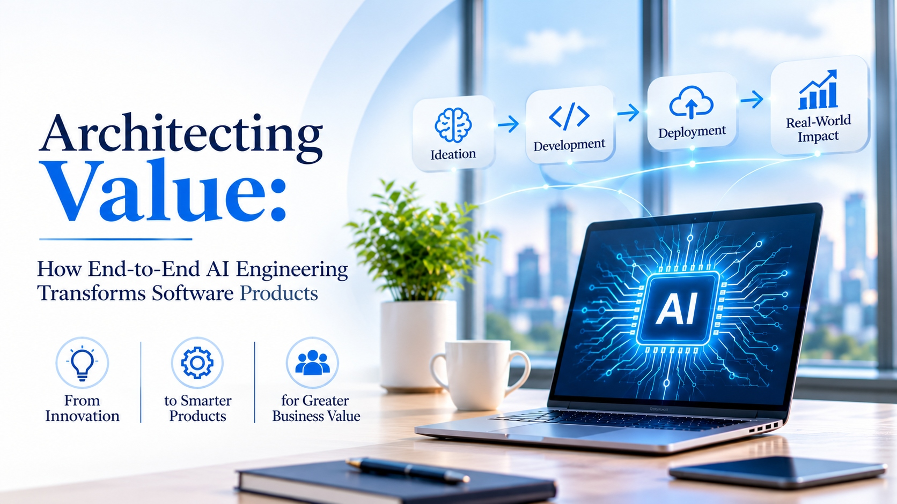

Architecting Value: How End-to-End AI Engineering Transforms Software Products

Software products rarely fail for lack of features. They fail because the features do not add up to value: a model that is accurate but unused, an interface that is polished but disconnected from the data behind it, a launch nobody was prepared to support. Value is architected, layer by layer, long before it is measured.
That is the case for end-to-end AI product engineering: designing the experience, the intelligence, the data, the platform, and the governance as one system, so that each layer supports the others and the product keeps improving after release.
This page lays out that system as five layers, shows where the value comes from, and describes six engineering moves that take a product from idea to something customers rely on.
The product stack
Five layers, each with a job. Weakness in any one limits the value of the rest.
- ExperienceWhere users meet the product: interfaces that adapt, explain themselves, and invite feedback.
- IntelligenceThe models, retrieval, and rules that turn data into decisions and actions.
- DataSources, quality, ownership, and the pipelines that keep information current.
- PlatformInfrastructure, interfaces between systems, monitoring, and release practices.
- GovernanceSecurity, privacy, compliance, and the review of risk across every layer.
Value is created at the top and protected at the bottom.
Where the value comes from
Every AI feature should trace back to at least one of these four sources.
| Source | How AI contributes | How to prove it |
|---|---|---|
| Lower cost | Automates routine work and reduces rework | Cost per task before and after |
| Faster work | Shortens the time from request to result | Cycle time against a baseline |
| New revenue | Enables features customers will pay for | Adoption and paid conversion |
| Better experience | Makes the product easier and more relevant | Task completion and retention |
Six engineering moves, from idea to product
Frame the problem
Write the value hypothesis and record a baseline before any build begins.
Prove the data
Confirm sources, quality, and access, so that the first model has something reliable to learn from.
Build the thinnest slice
Release the smallest version that can show real value to real users.
Integrate into workflows
Connect to the systems people use, and plan for the failures that will occur.
Release with guardrails
Monitor quality, cost, and security, and keep a way to roll back.
Learn and expand
Compare results with the baseline, then widen scope only when the evidence holds.
Signs the engineering is truly end to end
- The value hypothesis is written, with a baseline and an owner.
- Data ownership is settled before models are trained.
- The product works inside existing workflows, not beside them.
- Security and governance were part of the first design, not the last review.
- Quality, cost, and usage are visible to the team that owns them.
- The team can say what it would stop building.